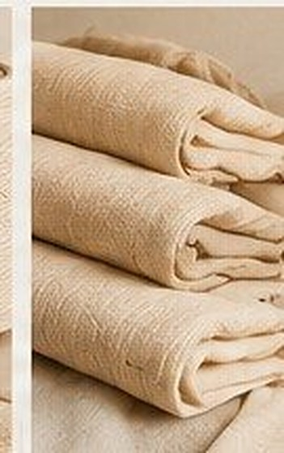
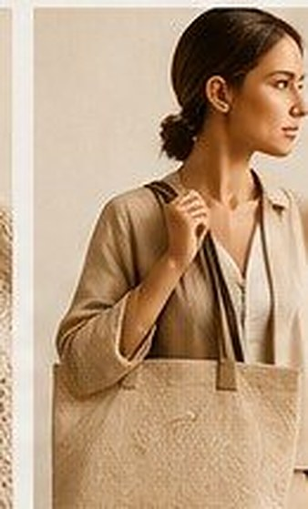
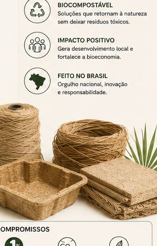

01 · Vestir
Moda Ecológica
Fios, tecidos e acessórios feitos de fibra de bananeira e curauá — a mesma resistência do sintético, com origem 100% natural e rastreável.

Tecidos Premium
Toque macio, caimento fluido, texturas exclusivas.
Em breveDetalhes →

Bolsas & Acessórios
Bolsas, carteiras e mochilas de moda sustentável.
Em breveDetalhes →

Calçados Sustentáveis
Tênis veganos, alpargatas e sapatos casuais.
Em breveDetalhes →

Fibra de Curauá
Amazônica, resistente e 100% natural — têxtil técnico.
Em breveDetalhes →